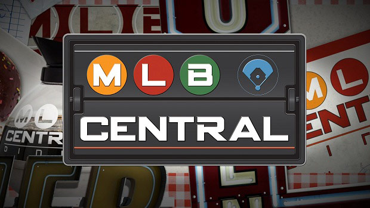
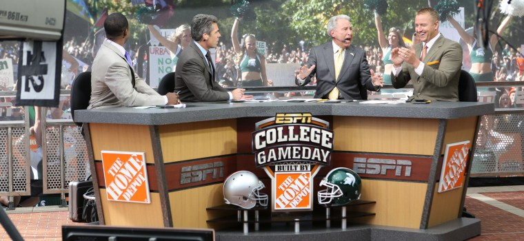
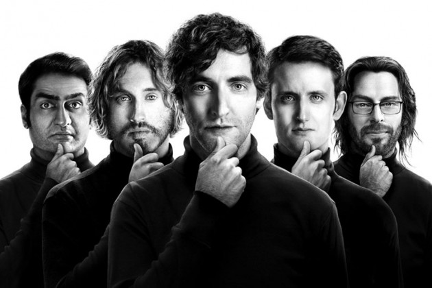
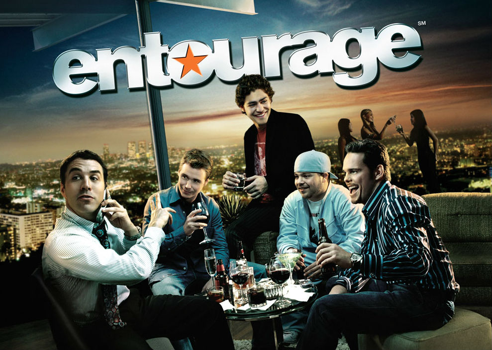
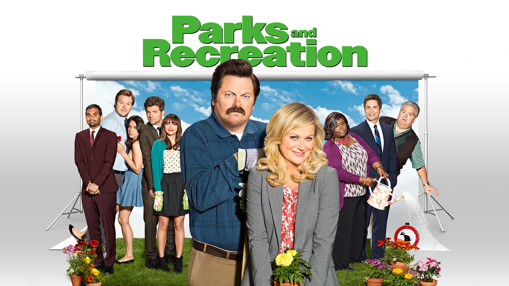
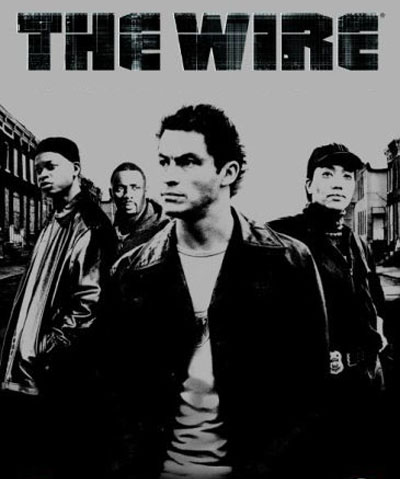
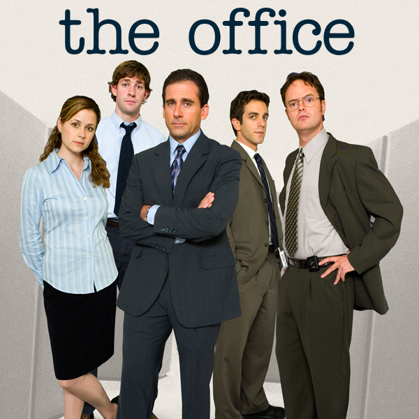

Mr. Robot
(USA Network)

Mr. Robot revolves around a cyber security engineer named Elliot, who suffers from depression and is anti-social. He also performs hacks on the side to learn more information about people. However, eventually Elliot's mental disabilities get the best of him which lead to a revolution taking place in his society.
I personally felt a passion for this show being a computer science major, but I'm sure people of all areas will enjoy it (my roommate who is a landscaper loved it as well).
Season 1 of Mr. Robot over already, but season 2 is coming next summer! In the meantime, go watch season 1 on USA Network's USANOW streaming service.
MLB Central
(MLB Network)

I am a huge Major League Baseball fan. The Detroit Tigers are my absolutely favorite team in the world, but the MLB is really the only professional sport that I enjoy watching other teams play. So because of that, MLB Central gives lengthy discussion about each and every team and game daily to help keep me updated with the entire MLB. Also, I really enjoy the people who work for MLB Network, as they really know their stuff and I can count on them to get me in depth information I could not get elsewhere. If you are a MLB superfan like me, this show is a must watch.
Currently (as the MLB is in offseason), the shows Hot Stove and MLB Tonight are airing on MLB Network. As the season starts to get closer around April, MLB Central will get back to airing daily
College Gameday
(ESPN)

College football is my favorite sport in the world, which is one of the main reasons College gameday is my favorite sports show. Kirk Herbstreit is one of the greatest sports analysts out there today and I look to him for analysis of teams and players. Since there are so many games going on each week in college football, this show gets you caught up with the big stories so far in the season, and there is no better way to kick off Saturday than watching Corso put on some headgear.
Tune in to ESPN at 9 a.m. this Saturday as College Gameday will be at the Army vs. Navy game
Silicon Valley
(HBO)

This show follows a team of software developers who develop a top notch compression product called Pied Piper. There is a lot of drama created throughout the first two seasons, as the team runs into lawsuits and faces tough competition. This is a comedy, so you will also be given plenty of laughs too!
I enjoyed this show very much because I have aspirations of maybe someday working in Silicon Valley either at a large company like Google, or creating the next big thing like the team in the show did.
Seasons 1 and 2 are currently on HBOGO, and Season 3 will be coming around for Spring 2016 on HBO.
Entourage
(HBO)

This comedy drama series follows up and coming movie star Vinny Chase and his entourage (hence the name) in Hollywood. I would consider this show as my favorite of all time, as there is a great blend of intense plot and drama, as well as having hilarious comedy.
The show is currently not live anymore, but you can get all the episodes on HBOGO. There is also a movie that just released under the same name that you should check out after you finish the TV series!
Parks and Recreation
(NBC)

Parks and Rec goes down as my favorite comedy of all time. It has such a unique cast of characters which leads you to being to exposed to comedy that is unique to this show only. Amy Poehler does an incredible job of acting as the main character Leslie Knope.
The show is not live on NBC anymore, but it is available on Netflix!
The Wire
(HBO)

HBO's The Wire tells the story of the streets of Baltimore in 5 seasons. Each season follows the same characters for the most part, but each season has a viewpoint of another group of people added to the show. For example, season 1 follows the task force trying to take down a heroin drug lord, while season 2 follows the union that works at the docks. Each season is very well put together and that is why this show is one of top favorite dramas of all time.
All 5 seasons of The Wire can be watched on HBOGO
The Office (US)
(NBC)

Other than Parks and Rec, The Office is one of the very few comedies I have watched that have been able to make me laugh every episode. Steve Carrell does an incredible job as manager Michael Scott.
The Office (US) currently has all episodes on Netflix!
House of Cards
(Netflix)

I really had no interest in politics until I watched this show. This Netflix original follows Frank Underwood (Kevin Spacey) as he plans to seek revenge on the president for removing him from the becoming the next Secretary of State.
Season 1 - 3 are all available on Netflix, with Season 4 on the way soon
Breaking Bad
(AMC)

Breaking Bad might have the greatest plot in the history of TV shows. The show follows Walter White, who was just diagnosed with lung cancer and decides he needs to do something to earn more money for his family so they are able to survive if he passes. So he decides to do the most obvious thing any normal person would think of... cook and sell crystal meth.
Breaking Bad has all episodes currently on Netflix!